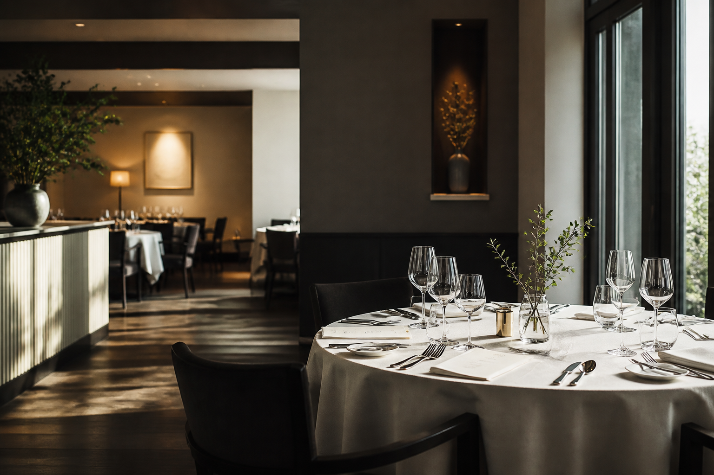

01
メニュー開発はしているが、売上に結びついていない
Consulting
事業戦略、ブランド方針、顧客体験を整理し、選ばれる理由が伝わるメニュー・商品・サービスへ落とし込みます。
Food experience design consulting
レシピオブライフは、飲食店・食品メーカーの経営課題を、認知心理学と上流設計から整理し、 メニュー・商品・ブランド体験へ翻訳するコンサルティングパートナーです。

News
Service
経営・ブランド・商品開発・体験設計を分断せず、食の事業課題を上流から整えます。
メニュー開発はしているが、売上に結びついていない
事業戦略、ブランド方針、顧客体験を整理し、選ばれる理由が伝わるメニュー・商品・サービスへ落とし込みます。
商品の魅力はあるのに、伝え方が定まっていない
コンセプト、撮影設計、販促物、WEB・SNS文脈まで、食の価値が一貫して伝わる表現を設計します。
感覚的な評価に頼り、改善の根拠がつくれていない
知覚心理学・官能評価・行動データを用いて、食べたくなる理由と続けたくなる構造を検証します。
Works
Hospitality
Product
Lab
Contact
飲食店、宿泊施設、食品メーカーの新規事業・商品開発・リブランディング・体験設計のご相談を承っています。
ご相談・お問い合わせはこちら